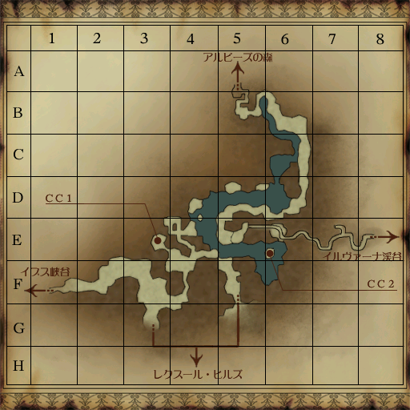

一覧採掘ガイド：ガルム回廊(War_Age)
ガルム回廊(War_Age) の掘り場 10 か所（岩 16 個）。
掘り場の地図

#1#2緑の点が岩、#番号が掘り場（岩 3 個以上）。点にマウスを合わせると岩の名前。
掘り場
地図の緑の点が岩、赤がプレイヤーを襲うモンスター、灰色が襲わないモンスターの出る位置。
#1（岩 3 個）
- 岩の数
- 3 個
- 広さ
- 16 m
- 間隔
- 4 m
- 再出現
- 3 分
- 岩の Lv
- 21〜39
出るもの
| アイテム | 1 周 | 1 時間に湧く量 |
|---|---|---|
| 黒炭 | 3.2 | 64 |
| 鉄鉱石 | 2.66 | 53.2 |
| 鉄鉱石の破片 | 2.04 | 40.8 |
| 木炭 | 0.48 | 9.6 |
| スズ | 0.36 | 7.2 |
| 銅鉱石 | 0.28 | 5.6 |
| 銀鉱石の破片 | 0.2 | 4 |
岩
| 出る岩（出るたびに抽選） | 数 |
|---|---|
| 炭の岩石 Lv 31〜32（60%）／銀の鉱石 Lv 34〜35（20%）／鉄の岩石 Lv 37〜39（20%） | 1 |
| 炭の岩石 Lv 21〜22（60%）／鉄の岩石（銅鉱石） Lv 24〜26（20%）／鉄の岩石（鉄鉱石の破片） Lv 27〜29（20%） | 1 |
| 鉄の鉱石 Lv 25〜26（70%）／鉄の岩石 Lv 30〜31（30%） | 1 |
近くのモンスター
プレイヤーを襲うモンスターが届く。
| モンスター | Lv | 行動 | 数 | 岩までの距離 |
|---|---|---|---|---|
| イクシオン リバー | 20〜23 | 格下アクティブ・リンク | 2 | 38 m |
#2（岩 3 個）
- 岩の数
- 3 個
- 広さ
- 12 m
- 間隔
- 9 m
- 再出現
- 3 分〜8 分
- 岩の Lv
- 21〜41
出るもの
| アイテム | 1 周 | 1 時間に湧く量 |
|---|---|---|
| 鉄鉱石 | 2.9 | 36.8 |
| 黒炭 | 1.58 | 27.9 |
| 鉄鉱石の破片 | 1.36 | 27.2 |
| スズ | 0.72 | 14.4 |
| 銅鉱石 | 0.56 | 11.2 |
| 木炭 | 0.48 | 9.6 |
岩
| 出る岩（出るたびに抽選） | 数 |
|---|---|
| 炭の岩石 Lv 21〜22（60%）／鉄の岩石（銅鉱石） Lv 24〜26（20%）／鉄の岩石（鉄鉱石の破片） Lv 27〜29（20%） | 2 |
| 鉄の岩石 Lv 30〜31（70%）／カーボンの鉱石 Lv 40〜41（30%） | 1 |
近くのモンスター
プレイヤーを襲うモンスターが届く。
| モンスター | Lv | 行動 | 数 | 岩までの距離 |
|---|---|---|---|---|
| ウンディーネ ガーディアン | 90 | アクティブ・友好度次第・リンク | 3 | 6 m |
| イクシオン リバー | 20〜23 | 格下アクティブ・リンク | 1 | 6 m |
| グリードル リッパー | 16〜21 | アクティブ・リンク | 1 | 38 m |
小さな掘り場（岩 1〜2 個）
位置は、地図の絵で見たときの一番近い番号付きの掘り場からの向きと直線距離。
| 掘り場 | 岩 | 位置 | 出る岩 | 再出現 | 1 周で出るもの | 近くの敵 |
|---|---|---|---|---|---|---|
| #3 | 2 | #1 の右上 347 m | スズの岩石 Lv 15〜16（70%）／鉄の鉱石 Lv 25〜26（30%） 炭の岩石 Lv 21〜22（60%）／鉄の岩石（銅鉱石） Lv 24〜26（20%）／鉄の岩石（鉄鉱石の破片） Lv 27〜29（20%） | 3 分 | 鉄鉱石の破片 1.2、スズ 1.1、黒炭 0.6、銅鉱石 0.6 | イクシオン バブル（Lv 20〜23）、イクシオン リバー（Lv 20〜23） |
| #4 | 2 | #1 の下 123 m | 鉄の鉱石 Lv 25〜26（70%）／鉄の岩石 Lv 30〜31（30%） 炭の岩石 Lv 21〜22（60%）／鉄の岩石（銅鉱石） Lv 24〜26（20%）／鉄の岩石（鉄鉱石の破片） Lv 27〜29（20%） | 3 分 | 鉄鉱石の破片 1.9、鉄鉱石 0.9、黒炭 0.6、スズ 0.4 | なし |
| #5 | 1 | #1 の右下 129 m | 銅の岩石 Lv 12〜13（50%）／スズの鉱石 Lv 15〜16（30%）／鉄の鉱石 Lv 17〜19（20%） | 3 分 | 銅鉱石 1.3、スズ 0.9、鉄鉱石の破片 0.3、木炭 0.1 | なし |
| #6 | 1 | #1 の下 213 m | スズの岩石 Lv 15〜16（70%）／鉄の鉱石 Lv 25〜26（30%） | 3 分 | スズ 0.7、鉄鉱石の破片 0.5、銅鉱石 0.3 | なし |
| #7 | 1 | #1 の下 89 m | スズの岩石 Lv 15〜16（70%）／鉄の鉱石 Lv 25〜26（30%） | 3 分 | スズ 0.7、鉄鉱石の破片 0.5、銅鉱石 0.3 | なし |
| #8 | 1 | #1 の右下 29 m | スズの岩石 Lv 15〜16（70%）／鉄の鉱石 Lv 25〜26（30%） | 3 分 | スズ 0.7、鉄鉱石の破片 0.5、銅鉱石 0.3 | イクシオン リバー（Lv 20〜23） |
| #9 | 1 | #1 の左下 34 m | スズの岩石 Lv 15〜16（70%）／鉄の鉱石 Lv 25〜26（30%） | 3 分 | スズ 0.7、鉄鉱石の破片 0.5、銅鉱石 0.3 | なし |
| #10 | 1 | #1 の下 68 m | 銅の鉱石（銅鉱石の破片） Lv 1〜2（40%）／銅の鉱石（銅鉱石） Lv 3〜4（30%）／銅の岩石 Lv 6〜7（20%）／スズの鉱石 Lv 9〜10（10%） | 3 分 | 銅鉱石の破片 0.8、銅鉱石 0.5、スズ 0.1 | コボルト ガード（Lv 38） |